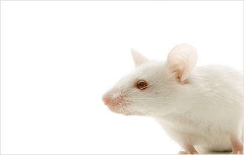
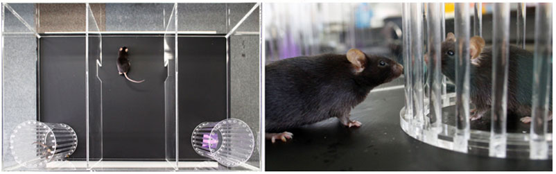
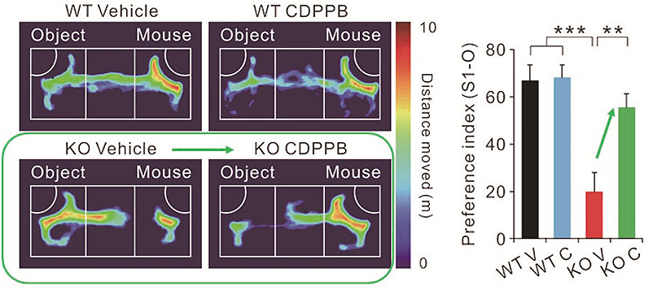

연구성과 10선
연구성과 10선
KAIST RESEARCH ACHIEVEMENTS
자폐증의 원인이 되는 유전자의 발견
생명과학과 김은준
요약
2028년 홍길동씨는 자폐증상을 보여 내원했다. 유전자 검사결과 시냅스 핵심신호단백질인 Shank2가 결손되었고, 그 결과 홍길동씨의 뇌에서 흥분성 시냅스의 활성이 감소되어 있었다. 홍길동씨에게 흥분성 시냅스의 활성을 증가시키는 약물을 투여하자 자폐증상이 개선되었으며, 이 후 홍길동씨는 정상적인 사회생활을 영위할 수 있게 된다.
연구내용

이 연구는 Shank2 유전자의 결손이 자폐를 유발한다는 사실을 밝히고 있다. NMDA receptor의 기능 감소가 자폐를 유발할 가능성을 제시하며, 동시에 NMDA 수용체의 기능 회복이 자폐 치료의 한 방법이 될 수 있음을 의미한다. 그리고 Shank2 결손 생쥐는 새로운 자폐의 생쥐 모델로서 향후 자폐 발병 연구 및 관련 약물 개발에 사용될 수 있을 것이다.
자폐증은 ▶사회성 결핍 ▶반복행동 ▶정신지체 ▶불안 ▶과잉행동 등을 동반하는 뇌 발달 장애이다. 현재 전 세계인구의 1~2%인 약 1억명이 자폐증으로 고통을 받고 있는 것으로 알려져 있다. 미 워싱턴대의 최근 연구결과에 따르면, 자폐계 질환을 앓는 젊은 성인 3명 중 1명이 직장생활에 적응하지 못하거나 대학에 진학하지 못하는 등 다른 장애보다 훨씬 심각한 후유증을 겪고 있는 것으로 나타났다. 문제는 지금까지 이를 효과적으로 치료할 수 있는 약물이 없다는 것. 때문에 치료 역시 자폐 증상의 대표적 특징인 반복행동을 줄여주는 수준에 머물고 있는 실정이다.
Shank2 유전자는 흥분성 시냅스에 존재하는 핵심신호단백질로서, 최근 인간에서 Shank2 유전자의 돌연변이와 자폐증 및 지적발달 장애와 연관되어 있는 것으로 알려졌다.
이 연구에서 Shank2 결손 생쥐를 제작하여 행동을 분석한 결과, 사회적 상호작용과 초음파 발성에 의한 의사소통이 감소하였으며, 반복적으로 뛰는 등 자폐증과 유사한 행동을 보였다. 그리고 전기생리학적 연구를 통하여 Shank2 결손 생쥐에서 흥분성 시냅스에 존재하는 NMDA 수용체의 기능이 감소하였음을 밝혔다. 더 나아가 약물처리를 통하여 NMDA 수용체의 기능을 회복시켜주었을 때 사회적 행동이 개선됨을 보였다. 이러한 결과는 NMDA 수용체의 기능이 감소하였을 때 자폐증과 유사한 증상이 나타날 수 있으며, NMDA 수용체의 기능을 회복시키는 약물들이 자폐증의 치료에 활용될 수 있음을 시사한다.
사회성을 평가하기 위한 행동실험(3-chamber test)
한 쪽 방에는 물체를, 반대편 방에는 생쥐를 돌아다니지 못하도록 놓은 뒤 시험하고자 하는 생쥐를 자유롭게 돌아다니도록 하면 생쥐가 물건과 다른 생쥐 중 어디에 더 관심을 가지는지를 측정하여 사회성을 평가할 수 있다.

약물처리에 의한 사회성의 회복
야생형 생쥐(WT)와 Shank2 결손생쥐(KO)에 흥분성 시냅스의 활성을 강화시키는 약물을 처리하지 않거나(vehicle) 처리(CDPPB)하였다. Shank2 결손 생쥐에 약물을 처리하자 사회성이 개선되었다.

연구비 지원
정부(교육과학기술부)의 재원으로 한국연구재단의 지원을 받아 수행된 창의적 연구사업 연구임. 연구번호(No. 2003-0046433)
연구실적
Autistic-like social behavior in Shank2-mutant mice improved by restoring NMDA receptor function. Nature. 486:261-265.